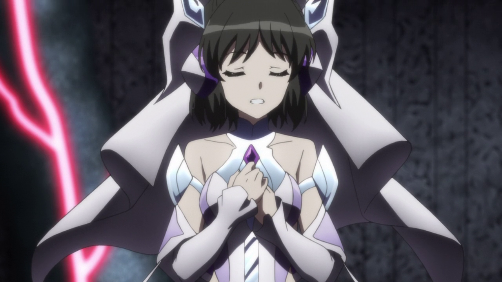

SG-i03'
Shenshoujing
Miku Kohinta
Miku es servicial y alegre, pero se preocupa constantemente por Hibiki debido al peligro en el que se encuentra con frecuencia como usuaria de Symphogear. En AXZ , se revela que años antes de la serie, Miku ha sufrido una dificultad para considerar los sentimientos de otras personas en general como lo había hecho Hibiki. A ella solo le importaba adelantarse a los demás y ganar, y veía a los demás como sus "peores rivales" que siempre miraban a Miku con sarcasmo, deseando no "verlos desde atrás", como en sus carreras de atletismo. Esto llevó a Miku a dejar el campo de atletismo al transferirse a Lydian al darse cuenta de que quería caminar lado a lado con Hibiki y a aprender a tocar el piano como una forma de expresar los sentimientos internos que a Miku le resulta tan difícil comunicar. Sus ataque son de largo alcance y su estilo musical es el techno darkwave